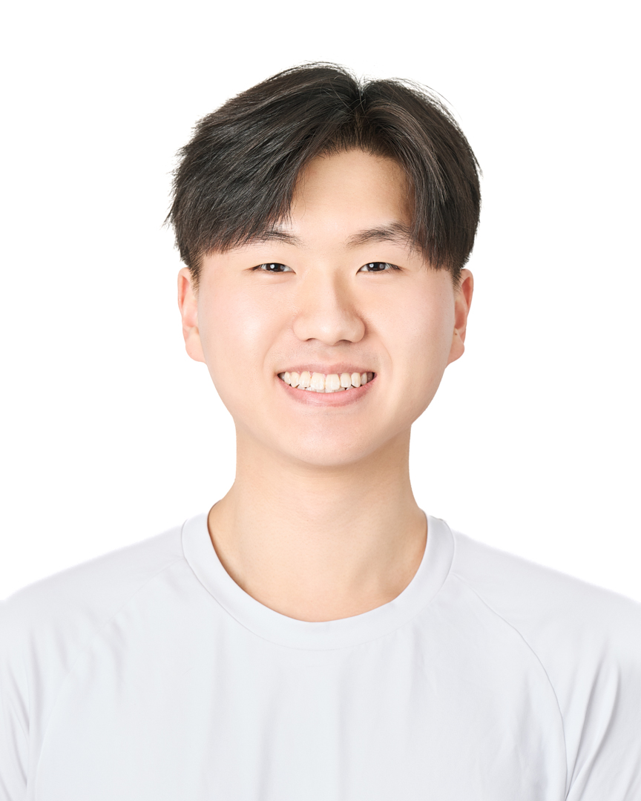
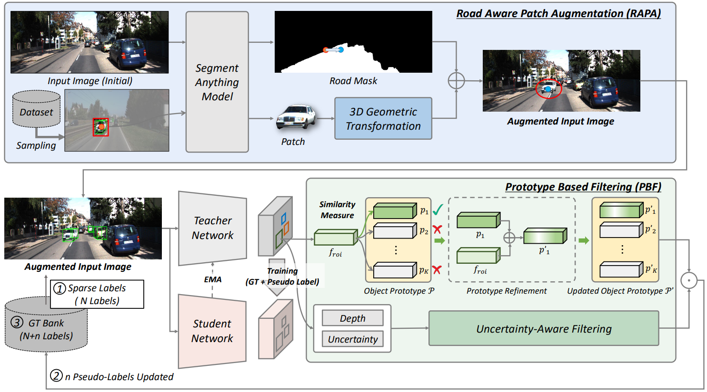

Junyoung Jung
M.S. Student · Kyung Hee University
I am currently an M.S. student in the Visual AI Lab at Kyung Hee University, Korea, advised by Professor Jung Uk Kim. I received my B.S. in Software Convergence from Kyung Hee University. My current research interests are 3D object detection and autonomous driving.
- jun3700 at khu.ac.kr
- GitHub
- Google Scholar
- CV
News
- MonoSAOD accepted to CVPR 2026.
Publications
-

MonoSAOD: Monocular 3D Object Detection with Sparsely Annotated Label
* Equal contribution · † Corresponding author
IEEE/CVF Conference on Computer Vision and Pattern Recognition (CVPR), 2026
Contact
The best way to reach me is by email at jun3700 at khu.ac.kr.